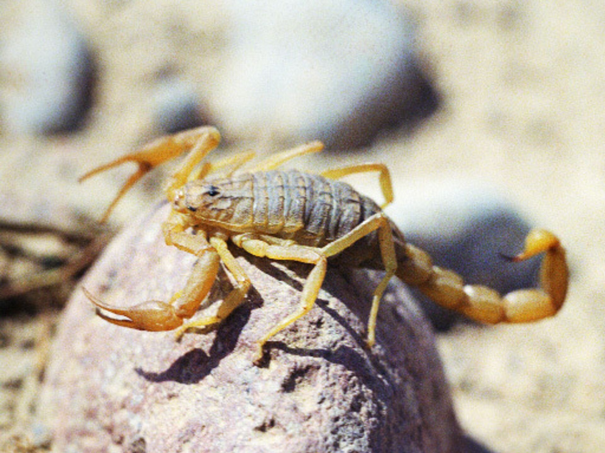

Общая информация о сурикатах
Добро пожаловать в увлекательный мир сурикатов. Эти небольшие млекопитающие, известные своей уникальной социальностью и бдительностью, обитают в песчаных районах Южной Африки. На этой странице мы представим вам общую информацию о сурикатах и их удивительном образе жизни.
Сурикаты - это живые примеры того, как сотрудничество и коллективное поведение способствуют выживанию в суровых условиях природы. Они образуют небольшие группы, называемые мобами, и выполняют разнообразные роли в своем коллективе, что делает их одними из наиболее захватывающих объектов изучения в мире животных. Давайте погрузимся в этот удивительный мир сурикатов и узнаем больше о них.
Виды и подвиды сурикатов
-
Сурикат (Suricata suricatta)
- Северный сурикат
- Южный сурикат
- Западный сурикат
- Красногрудый сурикат (Suricata ruficeps)
- Мароколо-сурикат (Suricata marokolensis)
Биологические особенности сурикатов
| Характеристика | Значение |
| Размер | Маленький, примерно 30-35 см в длину |
| Вес | От 0,7 до 1,2 кг |
| Длительность жизни | Обычно 8-10 лет в дикой природе |
| Размножение | Сезон размножения в зависимости от условий питания |
| Питание | Мелкие животные, насекомые, растения  |
Поведение сурикатов
Сурикаты, известные своей удивительной социальностью, проявляют слаженное и заботливое поведение внутри своих многолюдных групп, называемых мобами. Эти мелкие млекопитающие обитают в суровых условиях песчаных районов Африки, где их выживание зависит от тесного сотрудничества и дружбы внутри мобы. Сурикаты отличаются высокой степенью взаимозависимости, их социальная структура и взаимодействие уникальны.
Внутри моба сурикатов каждое животное выполняет определенные обязанности. Они поочередно стоят на страже, наблюдая за окружающей обстановкой, и предупреждают группу об опасности. Это их дежурная роль, которую они выполняют с выдающейся точностью и бдительностью. Остальные члены мобы могут спокойно искать пищу, зная, что на них наведен внимательный взгляд стражей.
Сурикаты также заботятся о молодых. Члены мобы помогают в воспитании детенышей, обеспечивая им пищу и защиту. Этот коллективный подход к разведению делает сурикатов уникальными в мире животных. Их бдительность и преданность друг другу позволяют им выживать в суровых условиях песчаных пустынь, их дружелюбное и харизматичное поведение делает их интересными объектами для наблюдения и исследования.
Сурикаты считаются одними из самых социальных и удивительных созданий в живой природе, и их поведение продолжает удивлять и вдохновлять исследователей и наблюдателей по всему миру.